内容协商机制是指客户端和服务器端就响应的资源内容进行交涉，然后提供给客户端最为适合的资源。内容协商会以响应资源的语言、字符集、编码方式等作为判断的基准。HTTP请求头中Content-Type，Accept等内容就是内容协商判断的标准。在Spring Boot中，一个完整的内容协商过程如下图所示：
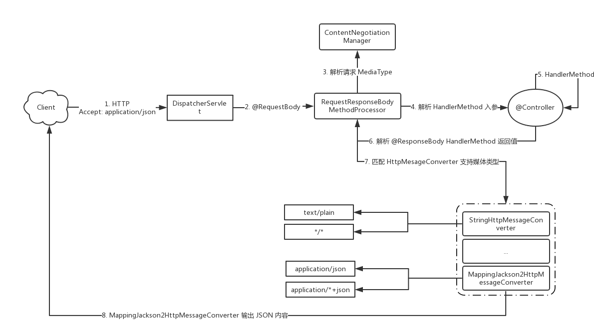
这个过程的核心组件：
| 组件 | 名称 | 说明 |
|---|---|---|
| ContentNegotiationManager | 内容协商管理器 | ContentNegotiationStrategy 控制策略 |
| MediaType | 媒体类型 | HTTP 消息媒体类型，如 text/html |
| @RequestMapping#consumes | 消费媒体类型 | 请求头 Content-Type 媒体类型映射 |
| @RequestMapping#produces | 生产媒体类型 | 响应头 Content-Type 媒体类型映射 |
| HttpMessageConverter | HTTP消息转换器接口 | HTTP 消息转换器，用于反序列化 HTTP 请求或序列化响应 |
| WebMvcConfigurer | Web MVC 配置器 | 配置 REST 相关的组件 |
| HandlerMethod | 处理方法 | @RequestMapping 标注的方法 |
| HandlerMethodArgumentResolver | 处理方法参数解析器 | 用于 HTTP 请求中解析 HandlerMethod 参数内容 |
| HandlerMethodReturnValueHandler | 处理方法返回值解析器 | 用于 HandlerMethod 返回值解析为 HTTP 响应内容 |
HttpMessageConverter为HTTP消息转换接口，Spring根据不同的媒体类型进行了相应的实现。比如上图中Accept为application/json，所以在第7步中，会选择使用HttpMessageConverter的实现类MappingJackson2HttpMessageConverter来处理返回值。
自定义HttpMessageConverter
除了Spring给我们提供的HttpMessageConverter实现外，我们也可以自定义HttpMessageConverter的实现，来处理一些实际业务需求。
假如现在要实现一个用于处理 Content-Type 为 text/properties 媒体类型的 HttpMessageConverter 实现类 PropertiesHttpMessageConverter，当我们在请求体中传输下面内容时：
1 | name:mrbrid |
能够自动转换为Properties对象。
我们可以参照MappingJackson2HttpMessageConverter的实现方式来进行实现，查看MappingJackson2HttpMessageConverter的原型图：
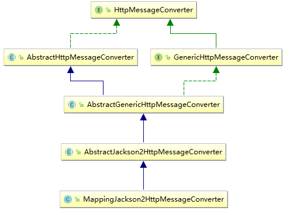
所以我们可以通过继承AbstractGenericHttpMessageConverter的方式来实现HttpMessageConverter接口。
新建Spring Boot项目，版本为2.1.0.RELEASE，并引入spring-boot-starter-web依赖，项目结构如下所示:
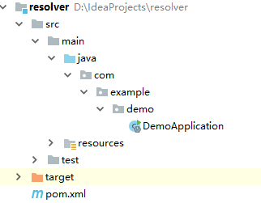
我们在com.example.demo路径下新建converter包，然后创建PropertiesHttpMessageConverter，继承AbstractGenericHttpMessageConverter：
1 | public class PropertiesHttpMessageConverter extends AbstractGenericHttpMessageConverter<Properties> { |
其中readxxx为反序列化过程，即将HTTP请求反序列化为参数的过程；writeInternal为序列化过程，将响应序列化。
反序列化过程
我们继续编写PropertiesHttpMessageConverter：
1 | public class PropertiesHttpMessageConverter extends AbstractGenericHttpMessageConverter<Properties> { |
在readInternal方法中，我们获取了HTTP请求体中的输入流和编码，然后调用Properties对象的load方法来将流转换为Properties对象。反序列化过程完成了，我们还需将PropertiesHttpMessageConverter添加到HttpMessageConverter集合中。
在com.example.demo路径下新建config包，然后创建WebConfigurer配置类：
1 |
|
extendMessageConverters方法为WebMvcConfigurer的默认方法，这里我们重写这个方法，用于将PropertiesHttpMessageConverter添加到消息转换器集合中。
接着创建一个Controller来测试一波，在com.example.demo路径下新建controller包，然后创建TestController：
1 |
|
我们通过@GetMapping注解的consumes属性指定了方法接收的媒体类型为text/properties，如果方法能够成功被调用，并且可以返回Properties对象，则说明我们自定义的HTTP消息转换器是可行的。
启动项目，使用PostMan访问：
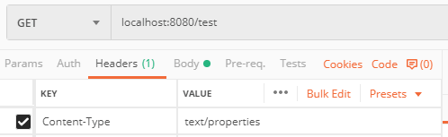
请求头中指定Content-Type为text/properties，请求体内容如下所示:
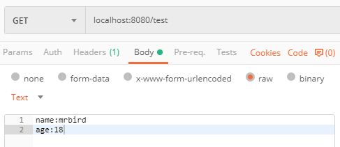
访问后，控制台输出错误如下：
1 | Resolved [org.springframework.http.converter.HttpMessageNotReadableException: Required request body is missing: public java.util.Properties com.example.demo.controller.TestController.test(java.util.Properties)] |
为什么呢？因为我们在自定义PropertiesHttpMessageConverter的时候需要在其构造器中指定它能够处理的媒体类型，我们查看MappingJackson2HttpMessageConverter的构造器，看看它是怎么实现的：
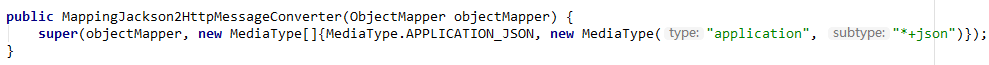
所以我们在PropertiesHttpMessageConverter的构造器中添加相应的媒体类型：
1 | public PropertiesHttpMessageConverter() { |
这时候，重启项目，再次访问上面的请求，可看到响应如下所示:

序列化过程
序列化的过程就是处理HTTP响应的过程，对应PropertiesHttpMessageConverter的writeInternal方法。那为什么我们都还实现这个方法，上面的Controller请求却能返回正常的JSON内容呢？两个原因：
这里我们定义的是REST接口，所以响应默认会被序列化为JSON格式；
由于使用
converters.add(new PropertiesHttpMessageConverter());这种方式来添加自定义HTTP消息处理器默认会被添加到集合的末尾，在处理JSON响应的时候被排在前面的MappingJackson2HttpMessageConverter优先处理了。
我们可以通过debug来查看PropertiesHttpMessageConverter是否真的被添加到集合末尾了：
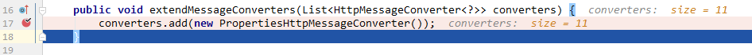
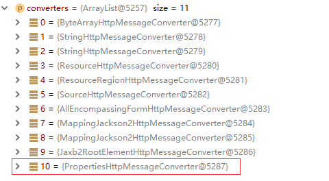
所以我们要换下面这种方式来添加自定义HTTP处理器：
1 |
|
我们重启项目，再次debug：
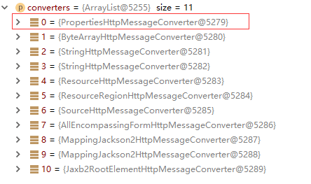
可看到，PropertiesHttpMessageConverter已经排在第一个了。这时候再次访问上面的请求，响应如下所示:
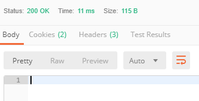
没有任何返回值，这是因为我们还没实现writeInternal呢。继续实现writeInternal方法：
1 | public class PropertiesHttpMessageConverter extends AbstractGenericHttpMessageConverter<Properties> { |
过程和反序化差不多，这里是通过Properties对象的store方法来进行写操作。
重启项目，再次访问上面的请求，响应如下所示：
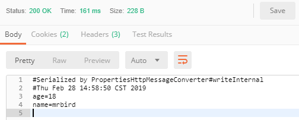
自定义HandlerMethodArgumentResolver
上面这种方式必须依赖于@RequestBody和@ResponseBody注解，除此之外我们还可以通过自定义HandlerMethodArgumentResolver和HandlerMethodReturnValueHandler实现类的方式来处理内容协商。
HandlerMethodArgumentResolver俗称方法参数解析器，用于解析由@RequestMapping注解（或其派生的注解）所标注的方法的参数。这里我们开始通过实现HandlerMethodArgumentResolver的方式来将HTTP请求体的内容自动解析为Properties对象。
在com.example.demo路径下新建resolver包，然后创建PropertiesHandlerMethodReturnValueHandler实现HandlerMethodArgumentResolver接口：
1 | public class PropertiesHandlerMethodArgumentResolver implements HandlerMethodArgumentResolver { |
方法supportsParameter用于指定支持解析的参数类型，这里为Properties类型。resolveArgument方法用于实现解析逻辑，解析过程和上面定义的PropertiesHttpMessageConverter的readInternal方法类似。
接着，我们还需将PropertiesHandlerMethodArgumentResolver添加到Spring自带的HandlerMethodArgumentResolver实现类集合中。值得注意的是，我们不能在配置类WebMvcConfigurer中通过重写addArgumentResolvers的方式来添加，查看该方法源码上的注释：
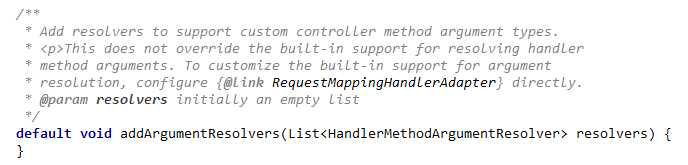
大致意思是通过这个方法来添加的方法参数解析器不会覆盖Spring内置的方法参数解析器，如果需要这么做的话，可以直接通过修改RequestMappingHandlerAdapter来实现。
所以我们可以通过下面这个方式来实现：
1 |
|
我们在WebConfigurer配置类装配完毕的时候，通过requestMappingHandlerAdapter对象的setArgumentResolvers方法来重新设置方法解析器集合，将PropertiesHandlerMethodArgumentResolver添加到集合的第一个位置。
之所以要将PropertiesHandlerMethodArgumentResolver添加到第一个位置是因为Properties本质也是一个Map对象，而Spring内置的MapMethodProcessor就是用于处理Map参数类型的，如果不将PropertiesHandlerMethodArgumentResolver优先级提高，那么Properties类型参数会被MapMethodProcessor解析，从而出错。
配置完毕后，我们改造一下TestController：
1 | // @RestController |
test1方法的参数没有被@RequestBody标注，启动项目，访问下面这个请求：
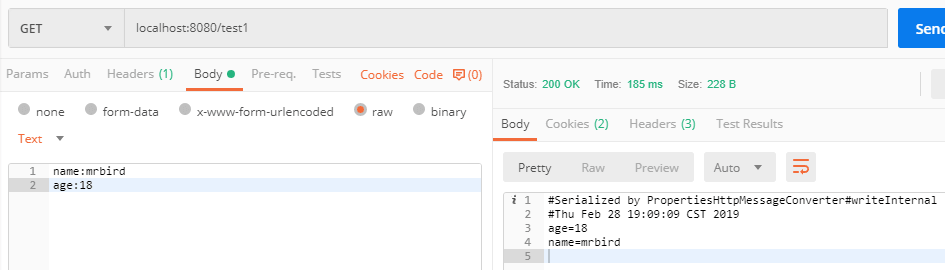
可以看到方法成功执行，并且返回了正确的内容，说明我们自定义的方法参数解析器PropertiesHandlerMethodArgumentResolver是可行的。
但是方法的返回值还是由PropertiesHttpMessageConverter的writeInternal方法解析的，并且依赖于@ResponseBody注解，接着我们开始实现自定义方法返回值解析器，并且不依赖于@ResponseBody注解。
自定义HandlerMethodReturnValueHandler
HandlerMethodArgumentResolver俗称方法返回值解析器，用于解析由@RequestMapping注解（或其派生的注解）所标注的方法的返回值。这里我们开始通过实现HandlerMethodReturnValueHandler的方式来自定义一个用于处理返回值类型为Properties类型的解析器。
在com.example.demo路径下新建handler包，然后创建PropertiesHandlerMethodReturnValueHandler实现HandlerMethodReturnValueHandler：
1 | public class PropertiesHandlerMethodReturnValueHandler implements HandlerMethodReturnValueHandler { |
supportsReturnType方法指定了处理返回值的类型，handleReturnValue方法用于处理返回值，这里的逻辑和PropertiesHttpMessageConverter的writeInternal方法基本一致，不再赘述。
接着将PropertiesHandlerMethodReturnValueHandler添加到到Spring自带的HandlerMethodReturnValueHandler实现类集合中，添加方式和自定义HandlerMethodArgumentResolver一致：
1 |
|
配置好后，我们将TestController的test1方法的@ResponseBody注解去掉，重启项目，再次访问:
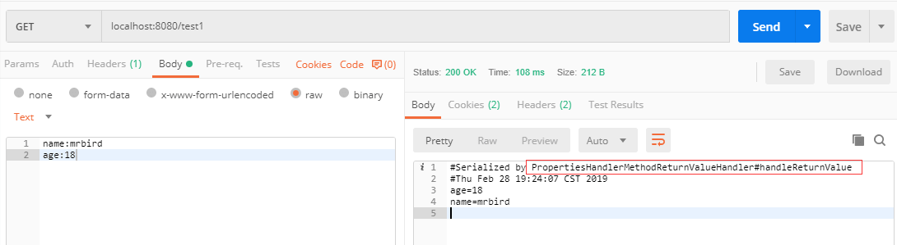
可以看到，返回值成功被PropertiesHandlerMethodReturnValueHandler的handleReturnValue方法解析了。
但是这里还有一个问题，我们查看控制台，会发现如下异常:
1 | javax.servlet.ServletException: Circular view path [test1]: would dispatch back to the current handler URL [/test1] again. Check your ViewResolver setup! (Hint: This may be the result of an unspecified view, due to default view name generation.) |
这是因为，在Spring中如果Controller中的方法没有被@ResponseBody标注的话，默认会把返回值当成视图的名称，而这里我们并不希望解析的Properties值被当成视图名称，所以我们需要在PropertiesHandlerMethodReturnValueHandler的handleReturnValue方法最后一行添加如下代码：
1 | // 告诉 Spring MVC 请求已经处理完毕 |
这行代码告诉Spring，请求已经成功完成了，无需进行后续的处理。重启项目再次访问上面的请求，控制台便不再抛异常了。
源码链接：https://github.com/wuyouzhuguli/SpringAll/tree/master/47.Spring-Boot-Content-Negotiation